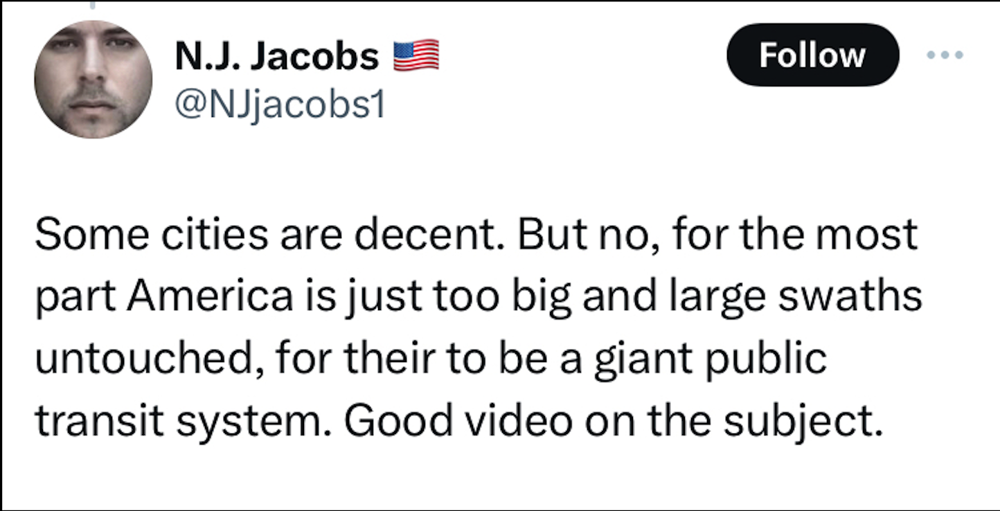

Source:
By Christopher Calixte
Dec 15,2021
The intention of this article is to dispel common misconceptions about public transportation—whether in the form of buses, subways, rail lines, or high-speed rail—offering a clear and accurate perspective tailored for high school students. This article won't capture the full spectrum of myths in the discussions about public transportation, but its aim is to address the prevalent ones.The myths are taken anecdotally to represent the conversations that the youths may experience as they use social media. My aim is to equip students with valuable insights, fostering a better understanding of the truth surrounding public transportation in our communities.
Antiplaner
America is the third-biggest country globally and currently has the largest GDP. Although we seem to have many
resources, there is this idea that America cannot find a sweet spot to implement rail on a large scale. The
antiplanner in the article '10 Reasons Not to Build
High-Speed Rail'
starts by saying, "A fundamental precept
behind high-speed rail is that there is a 'sweet spot' of distances between cities in which high-speed rail will
thrive as the distance is too long for auto travel and too short for air travel." He challenges this by saying,
"this is entirely speculative and there is absolutely no evidence that it is true." However, China is a great
example of what public transport can look like on a large scale. Why then does this notion exist that there is
no sweet spot? This is because many of the small countries that implement strategies for public transit and have
the most success are much smaller on average. A list of some countries and their land masses includes: South
Korea, 233.7 mi²; Japan, 145,935 mi²; Switzerland, 15,940 mi²; Netherlands, 16,158 mi². In comparison, America
has an area of 3.797 million mi², which is a huge difference in area, making it hard to determine if the systems
developed in these smaller nations can be replicated in America. However, the lack of examples is not a
justification for why we have yet to implement a more extensive rail. China has an area of 3.705 million mi²,
although this is a little smaller than America, there is evidence it can work on a large scale. A press release
by The World Bank found that in China, high-speed rail service competes with road and air transport for
distances that are approximately 1200 km. Additionally, the fares are competitive with bus and airfares and are
about one-fourth the base fares in other countries. Consequently, high-speed rail attracts more than 1.7 billion
passengers a year from every income group. Although this is more than 600 miles, the belief that a sweet spot
cannot be found is challengeable, if not completely false.
In recent years, the cost of living for the Average American has skyrocketed. The price of homes, food, gas,
etc., has risen without a significant increase in wages for workers. The result is that people can be on guard
about the things that their tax dollars will be funding every year. Evidence by the antiplanner in the article
'10 Reasons Not to Build
High-Speed Rail'. However, it is important to challenge this idea when it comes to
public transportation specifically. Unfortunately, if any person is looking for public transportation to pay for
itself through its fares, that would not be a possibility at the moment with our current tools. What is true is
that the benefits of public transportation have many benefits that outweigh the cost that must be considered.
For example, the APTA states that "Every $1 invested creates $4 in economic benefits. Upgrading passenger
operations on newly revitalized tracks, bridges, and rights of way is spurring business productivity along
corridors. The rail services will connect America’s economically vital mega-regions and help keep them mobile,
productive, efficient, and internationally competitive." Essentially, what this is saying is that at the cost of
our tax dollars, American citizens will be paid back through a better economy. Additionally, Urban Studies
journal, central city employment density, estimated wage increases range between $1.5 million and $1.8 billion
per metropolitan area yearly for a 10 percent increase in transit seats or rail service miles per capita. A
denser and growing population of people that utilize the transit systems has been shown to give firms and
households unanticipated benefits, and current benefit–cost. As a result, we believe the estimates can be even
higher than our estimated result, particularly in large cities with existing transit networks. Ce cost which
comes out of pocket. There are also additional benefits that individuals must consider as well. Without a car,
there will be less of a need for insurance, fuel, or maintenance.
Over the years, the personal car market has dominated the transportation industry. According to Forbes, "A
total
of 278,063,737 personal and commercial vehicles were registered to drivers in the U.S. in 2021." Additionally,
"the number of registered vehicles in the United States increased by 3.66% between 2017 and 2021," suggesting a
consistent upward trend in car ownership. Moreover, the automotive manufacturing industry holds the top rank
among all global manufacturing sectors in terms of market size. However, relying solely on these facts might
lead one to the conclusion that the preference for cars is overwhelming. In a Reddit post by 'flossingjonah,'
the poster outlines reasons for opposing public transportation.
Source: Reddit
Yet, these figures and opinions, when
scrutinized, fall short of representing the full reality. A comprehensive review of public polls, conducted by
(Agrawal &
Mineta Transportation Institute, n.d.), presents evidence that contradicts the assumption of
widespread aversion to public transportation. Particularly, the study found that when informed "80 cents out of
every federal transportation dollar goes to highways, while 17 cents is used for public transportation such as
trains, rail, ferries, and buses around the country, and the remainder for other transportation needs," 58% of
participants agreed that more should be allocated to public transportation. Moreover, these polls revealed that
the primary benefit people associate with public transportation is congestion relief. Additional polling data
from Data for
Progress indicates that 90% of Democrats believe the U.S. would benefit from improved
public
transit, while 65% of Republicans agree that the U.S. needs a better public transportation system. Furthermore,
the data highlights that voters, including 35% of Republicans, are willing to support transit even if it entails
an increase in taxes.
In recent years, the personal car market has dominated the transportation industry. According to Forbes,
"A
total of 278,063,737 personal and commercial vehicles were registered to drivers in the U.S. in 2021."
Additionally, "the number of registered vehicles in the United States increased by 3.66% between 2017 and 2021,"
suggesting a consistent upward trend in car ownership. Moreover, the automotive manufacturing industry holds the
top rank among all global manufacturing sectors in terms of market size. However, relying solely on these facts
might lead one to the conclusion that the preference for cars is overwhelming. In a Reddit post by
'flossingjonah,' the poster outlines reasons for opposing public transportation. Yet, these figures and
opinions, when scrutinized, fall short of representing the full reality. A comprehensive review of public polls,
conducted by(Agrawal &
Mineta Transportation Institute, n.d.), presents evidence that contradicts the
assumption of widespread aversion to public transportation. Particularly, the study found that when informed "80
cents out of every federal transportation dollar goes to highways, while 17 cents is used for public
transportation such as trains, rail, ferries, and buses around the country, and the remainder for other
transportation needs," 58% of participants agreed that more should be allocated to public transportation.
Moreover, these polls revealed that the primary benefit people associate with public transportation is
congestion relief. Additional polling data from Data for Progress
indicates that 90% of Democrats believe the
U.S. would benefit from improved public transit, while 65% of Republicans agree that the U.S. needs a better
public transportation system. Furthermore, the data highlights that voters, including 35% of Republicans, are
willing to support transit even if it entails an increase in taxes.
https://rosap.ntl.bts.gov/view/dot/29133
Millions of people get on the road everyday to go to work. However, they may be unaware that they are not as safe as they believe. Take this twitter user for example, Michael Brand. In response to a post advocating for public transit, he comments that it is unsafe.
Source: Twitter
An analyst,Todd Litman in his paper “A New Transit Safety Narrative” collects the statistics pertaining to public transportation and finds that “on the bus is around 60 times safer when compared to personal transportation. Riding the metro or light rail is about 30 times safer. Using commuter or intercity rail is over 20 times safer than driving.” Additionally, there is this idea that public transportation makes a community more susceptible to crime. Although the crime rate has been showing signs of decline, Americans want to protect their neighborhoods, schools, and themselves and rightfully so. However, I want to address the specifics of what the community is actually scared of. Another study, Transit Security Handbook from (Weyrich & Lind, 2001) found that 93% of all crime on rail systems is property crime for public transit. Of the property crimes the rates for burglary, arson, and motor vehicle theft were found to be low across all rail systems. Furthermore, 81% of the 93% property crime was fare evasion.
It may seem that cars are more efficient for the environment at first glance, especially with the amount of car ownership. A quote by John Semmens from (Weyrich & Lind, 2001) goes, “But isn't public transit good for the environment? Given the higher carrying capacity per bus or train, it would certainly seem that transit could provide some environmental benefits. The problem is the gap between theoretical capacity and actual ridership. Public transit is so inconvenient and unattractive that its actual ridership falls far short of its theoretical capacity. Average load factors of 20 percent are typical. As a result, the energy efficiency of public transit doesn't seem to be any better than driving a car. There seems to be the sentiment that public transit is not properly able to seat all of their passengers. However, when we compare them to car drivers, we find that this is not the case. Instead, we found that public transit performed better. When driving a car during rush hour, typically only one out of the five seats is taken, opposed to public transit where, typically, all the seats are occupied in the same conditions. Although it is important to note that total ridership is going to be more due to the current availability of cars in comparison to public transit, as referenced in Table 1, cars do not perform better in the number of people that are taken on trips.

Source: (Weyrich & Lind, 2001)
Furthermore, it is shocking to see that the number of people that ride heavy rail and light rail are twice as high on average than cars. The key takeaway from this is that the reality is again more nuanced in the initial argument that was brought up. The total amount of wasted space is an important factor in this conversation.
1.
2.
3.
4.
5.
6.
7.
8.
9.
10.
11.
12.
13.